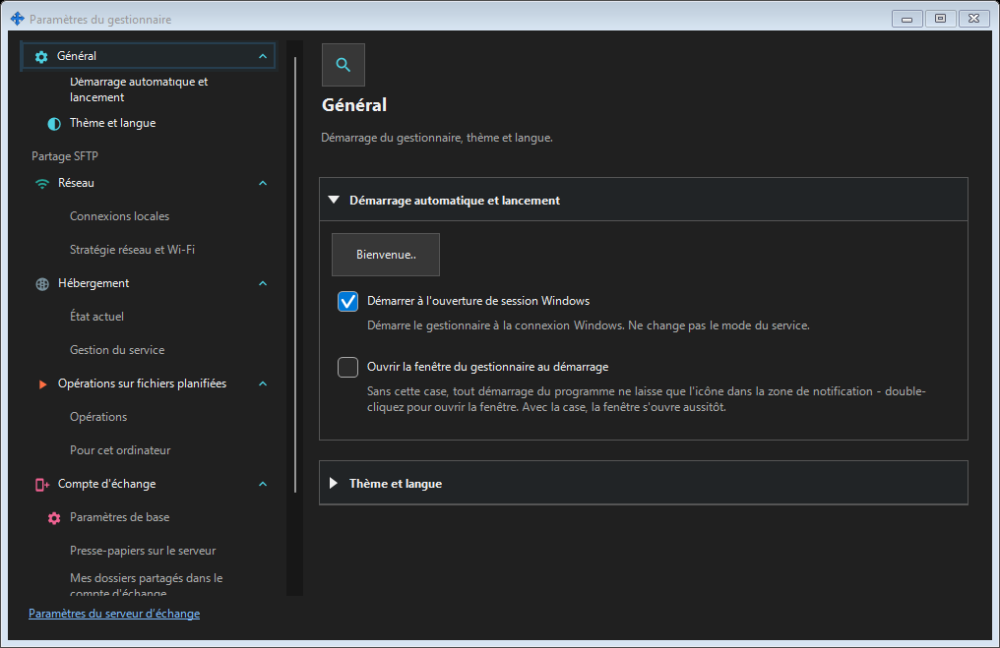
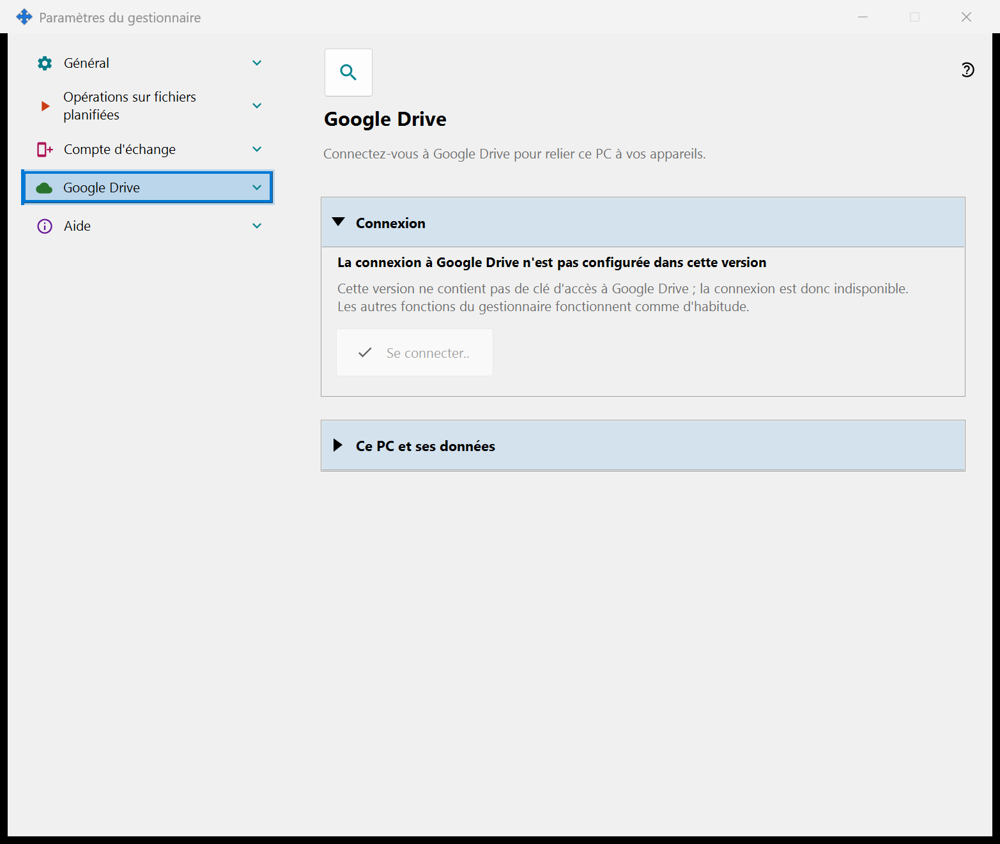
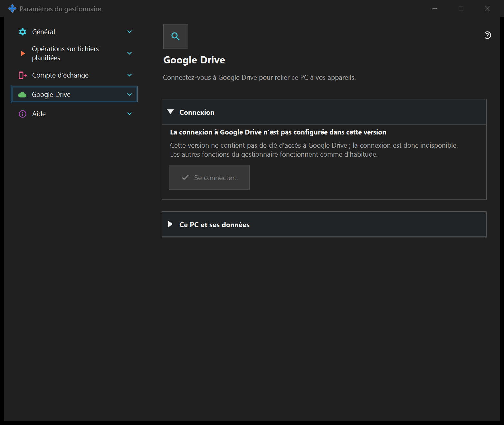

Paramètres du gestionnaire
Paramètres du gestionnaire
Objectif
Démarrage, thème, langue, compte distant, publication, presse-papiers et opérations planifiées appartiennent au gestionnaire et ne nécessitent pas de serveur local. Si le composant de partage SFTP est installé, ses pages forment un groupe dans cette fenêtre.


Dans cet ordre
Ouvrez depuis la zone de notification ou les liens des composants. Ouvrir et fermer ne démarre ni n’arrête un serveur. La connexion distante ne nécessite pas de serveur local.
Les éléments
Paramètres du gestionnaire
Démarrage, thème, langue, compte distant, publication, presse-papiers et opérations planifiées appartiennent au gestionnaire et ne nécessitent pas de serveur local. Si le composant de partage SFTP est installé, ses pages forment un groupe dans cette fenêtre. Ouvrez depuis la zone de notification ou les liens des composants. Ouvrir et fermer ne démarre ni n’arrête un serveur. La connexion distante ne nécessite pas de serveur local.
Paramètres du gestionnaire
Démarrage, thème, langue, compte distant, publication, presse-papiers et opérations planifiées appartiennent au gestionnaire et ne nécessitent pas de serveur local. Si le composant de partage SFTP est installé, ses pages forment un groupe dans cette fenêtre. Ouvrez depuis la zone de notification ou les liens des composants. Ouvrir et fermer ne démarre ni n’arrête un serveur. La connexion distante ne nécessite pas de serveur local.
Google Drive
Cette page connecte ce PC à votre propre compte Google afin que l'application puisse utiliser son dossier masqué privé sur votre Google Drive. Cliquez sur « Se connecter.. » : le navigateur par défaut s'ouvre, vous confirmez l'accès chez Google et Google renvoie la réponse à ce PC par une adresse locale ; vous pouvez ensuite fermer l'onglet du navigateur. La seule autorisation demandée est l'accès au dossier masqué propre à l'application sur votre Google Drive (portée drive.appdata) : l'application ne peut voir aucun autre fichier de votre Google Drive et ne reçoit ni adresse e-mail ni données de profil. Si Google accorde un accès différent de celui demandé, la connexion est refusée. La ligne en gras indique l'état. « Non connecté à Google Drive » : « Se connecter.. » est disponible ; si l'accès a été révoqué ou a expiré, la ligne du dessous le dit et invite à se reconnecter. « En attente de la connexion dans le navigateur.. » : terminez la connexion dans le navigateur ou cliquez sur « Annuler ». « Connecté à Google Drive » : ce PC est relié à votre Google Drive, et son nom ainsi que son identifiant court sont affichés. « Google Drive est indisponible pour le moment » : la ligne du dessous donne la raison - pas de connexion, limite quotidienne d'envoi atteinte, plus d'espace libre sur votre Google Drive ou erreur de Google ; sans connexion ou en cas d'erreur, l'application réessaie d'elle-même. « Déconnexion de Google Drive.. » s'affiche pendant la déconnexion. « Se déconnecter sur cet appareil » pose une seule question, dont la réponse par défaut est « Non ». Après « Oui », l'accès est révoqué chez Google, les enregistrements de ce PC sont supprimés du dossier masqué de votre Google Drive et le jeton de connexion conservé sur ce PC est supprimé ; une ligne sous les boutons indique le nombre d'enregistrements supprimés ou précise que Google n'a pas confirmé la révocation, que vous pouvez alors faire dans les paramètres de votre compte Google. Dans une version sans clé d'accès Google, la page affiche « La connexion à Google Drive n'est pas configurée dans cette version », « Se connecter.. » est désactivé et les autres fonctions du gestionnaire fonctionnent comme d'habitude.


Paramètres du gestionnaire
Démarrage, thème, langue, compte distant, publication, presse-papiers et opérations planifiées appartiennent au gestionnaire et ne nécessitent pas de serveur local. Si le composant de partage SFTP est installé, ses pages forment un groupe dans cette fenêtre. Ouvrez depuis la zone de notification ou les liens des composants. Ouvrir et fermer ne démarre ni n’arrête un serveur. La connexion distante ne nécessite pas de serveur local.
Paramètres du gestionnaire
Démarrage, thème, langue, compte distant, publication, presse-papiers et opérations planifiées appartiennent au gestionnaire et ne nécessitent pas de serveur local. Si le composant de partage SFTP est installé, ses pages forment un groupe dans cette fenêtre. Ouvrez depuis la zone de notification ou les liens des composants. Ouvrir et fermer ne démarre ni n’arrête un serveur. La connexion distante ne nécessite pas de serveur local.
Paramètres du serveur d’échange
Paramètres du gestionnaire · Paramètres de partage SFTP · Paramètres du serveur d’échange